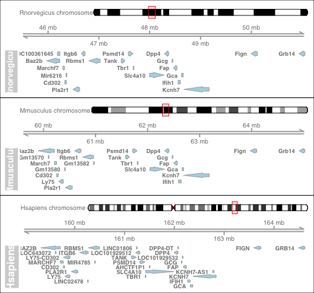

SyntenyViz
A synteny visualization R package for comparative genomics
Project maintained by Hosted on GitHub Pages — Theme by mattgraham
What is SyntenyViz
SyntenyViz is a R package to visualise synteny across various biological species.
Motivation
Visualising the synteny across species not only enables intuitive examination and facilitates reconstruction effort of ancestral genomes, but also allow more direct interrogation of gene regulations and gene structures within a gene cluster.
Installation
Install from RStudio
- Install and load
devtoolsinstall.packages("devtools") library(devtools) - Install and load
SyntenyVizfromGitHubinstall_github("DPP4ResearchGroup/SyntenyViz") library(SyntenyViz)To allow build vignettes,
build_vignettes = TRUEoptions can be used asinstall_github("DPP4ResearchGroup/SyntenyViz", build_vignettes = TRUE) library(SyntenyViz)Developing version can be accessed via
developasinstall_github("DPP4ResearchGroup/SyntenyViz", ref = "develop") library(SyntenyViz)
Quick Start for the Inpatients
Quick and minimum steps to get start a synteney conservation analysis with SyntenyViz
- Define an investigation range
We need to firstly define an investigation range to cover the target range in gene coordinate. We will use a mouse dipeptidyl dipeptidase 4 gene (DPP4-mm) in this example, where DPP4-mm locates at chromosome number 2 between 62,330,073-62,412,231 bp.
# orgm is a handle for organism orgmName <- "Mmusculus" # mycoords.list is the investigation range handler mycoords <- "2:6.0e7:6.5e7" - Convert
mycoords.listinto a GRange objectmycoords.gr <- SyntenyViz::coordFormat (mycoords.list = mycoords)It is always a good habit to double check the input, so
mycoords.gr - Construct a single synteny graph
synvizPlot(mycoords.gr, orgmName)
- Construct a multi synteny graph
Pick a few of targets
orgm.1 <- "Hsapiens"
mycoords.list.1 <- "2:15.95e7:16.45e7"
orgm.2 <- "Mmusculus"
mycoords.list.2 <- "2:6.0e7:6.5e7"
orgm.3 <- "Rnorvegicus"
mycoords.list.3 <- "3:4.6e7:5.1e7"
Then construct a multiple synteny query
orgmsList <- orgmsCollection.init (orgmsList)
orgmsList <- orgmsAdd (orgm.1, orgmTxDB, mycoords.list.1, orgmsList)
orgmsList <- orgmsAdd (orgm.2, orgmTxDB, mycoords.list.2, orgmsList)
orgmsList <- orgmsAdd (orgm.3, orgmTxDB, mycoords.list.3, orgmsList)
Now, construct a comparative multi-synteny graph
multiplot <- multisynvizPlots(orgmsList)

Examples
SyntenyViz also includes training material, which can be accessed via vignettes from RStudio
install_github("DPP4ResearchGroup/SyntenyViz", build_vignettes = TRUE)
browseVignettes("SyntenyViz")
OR a PDF can be accessed from SyntenyViz homepage.
Contribution
- Fork to your contributing account
- Create your feature branch (
git checkout -b my-new-feature) - Commit your changes (
git commit -am 'Added some feature') - Push to the feature branch (
git push origin my-new-feature) - Create a new PR
Issue Tracking
Issues and bugs can be raised and tracked through GitHub issue tracker for SyntenyViz.
Unit Testing
Travis CI testing travis status implements R CMD check.
The function integrity is checked by R native testthat, which can also be invoked by utility function devtools::test() from RStudio.